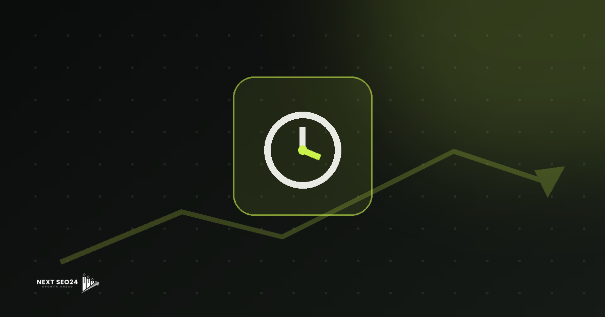

How long does SEO take to work?
The honest answer most agencies avoid: meaningful organic movement typically takes 3–6 months, and the strongest gains arrive after that as your site's authority compounds. Here's why — and exactly what to expect, month by month.
SEO is not a light switch. It is a compounding investment — one that rewards patience and punishes shortcuts. We tell every client the same thing on day one: if you need customers this week, use paid search while the organic foundation is being built. If you want traffic that costs less and less over time, SEO is the right play — but you need to plan for a realistic runway.
The honest answer: typically 3–6 months for meaningful movement
Most reputable SEO practitioners agree: on a reasonably healthy site in a moderately competitive niche, you should see meaningful ranking movement within three to six months of consistent, quality work. "Meaningful" means pages moving into the top 20 for target keywords, not necessarily position one. The final climb to positions one through three often takes another three to six months on top of that — sometimes longer in highly competitive industries.
This is not a flaw in SEO — it is how Google is designed to work. The algorithm deliberately takes time to validate authority, consistency, and trustworthiness. A site that appears credible overnight is a red flag to Google, not a green one.
A rough month-by-month timeline
- Months 1–2: Technical & foundation. Crawl and indexation issues fixed, site speed improved, Core Web Vitals addressed, keyword research finalised, content calendar built. Google begins re-crawling the improved site. Ranking changes at this stage are minimal — the groundwork is being laid.
- Months 3–4: Content & early movement. New optimised pages start to get indexed and appear for long-tail queries. Early ranking signals emerge. You may see impressions rise in Search Console before clicks follow. This is the phase where thin or duplicate content from the past can stall progress if not cleaned up.
- Months 5–6+: Authority & compounding. Backlinks earned from outreach and content start passing authority. Older pages that were indexed earlier begin to climb. Traffic starts converting. This is when the investment begins to visibly pay off — and it keeps accelerating if the work continues.
What makes SEO faster — or slower
Several factors can meaningfully compress or extend this timeline:
- Domain age and existing authority. An established domain with some historical backlinks moves faster than a brand-new one. New domains often experience a trust-building delay in the first few months regardless of content quality.
- Competition level. Ranking for "best coffee shop KL" is very different from ranking for "insurance Malaysia." Research your actual competitive landscape before setting timeline expectations.
- Content cadence. Publishing two high-quality, well-researched articles per month consistently outperforms publishing ten average pieces in month one and then nothing for five months. Consistency signals are real.
- Site health. Crawl blocks, duplicate content, slow load times, and poor mobile experience all act as friction on every other SEO investment. A technically clean site amplifies everything else.
- Budget and resource. More resources mean more content, more outreach, and faster technical iteration. A lean budget can still win in lower-competition niches, but it usually takes longer.
Why instant #1 promises are a red flag
If an agency guarantees page-one rankings within days or a few weeks, they are either misrepresenting what "SEO" means — perhaps confusing it with paid ads — or they are selling tactics that Google's guidelines explicitly prohibit. Purchased link schemes, cloaking, and AI-spun content at scale can produce short-term ranking spikes, but they carry severe penalties: manual actions, algorithmic demotions, or complete deindexation. Recovering from a Google penalty typically takes longer than building authority properly from the start.
Durable SEO builds a moat. Every quality backlink, every well-researched article, every technical improvement makes the position harder for competitors to displace. That is the compounding effect working in your favour — but it requires genuine time and genuine effort.
How to bridge the wait with paid search
Google Ads and Meta campaigns can deliver traffic from day one while the organic foundation is being built. The smartest approach we recommend to clients is a parallel-track strategy: run paid search on your highest-value commercial keywords to generate immediate leads, while using the campaign's search-term reports to inform and refine your SEO keyword targeting. When your organic rankings eventually arrive, you can reduce paid spend on those terms — or keep both running for maximum SERP coverage.
Frequently asked questions
Can SEO work faster than 3–6 months?
Yes, in some circumstances. New content on an already-authoritative domain can rank within weeks. Technical fixes that unblock crawling or indexing can produce ranking jumps almost immediately. Low-competition long-tail queries tend to move faster than broad, head terms. That said, sustainable organic authority almost always takes months to build properly.
Why do SEO results compound over time?
Every piece of quality content you publish earns backlinks and internal link equity over time. Domain authority rises incrementally. Google's trust in your site increases with consistent publishing and positive engagement signals. Each new ranking page also creates internal linking opportunities that lift older pages — so the whole site rises together, not just individual pages.
What if I see no movement after 3 months?
Three months without any movement is a signal worth investigating, not simply waiting out. Common culprits include crawl or indexation blocks, thin or duplicate content, zero backlink acquisition, or targeting keywords that are far too competitive for your current domain authority. A technical audit and content gap analysis should be the first steps.
Wondering how long SEO will take for your site?
Get a free, no-obligation review of your site's current SEO standing. We'll give you an honest assessment of your timeline, the biggest quick wins available, and a realistic roadmap to organic growth.
Chat on WhatsApp →